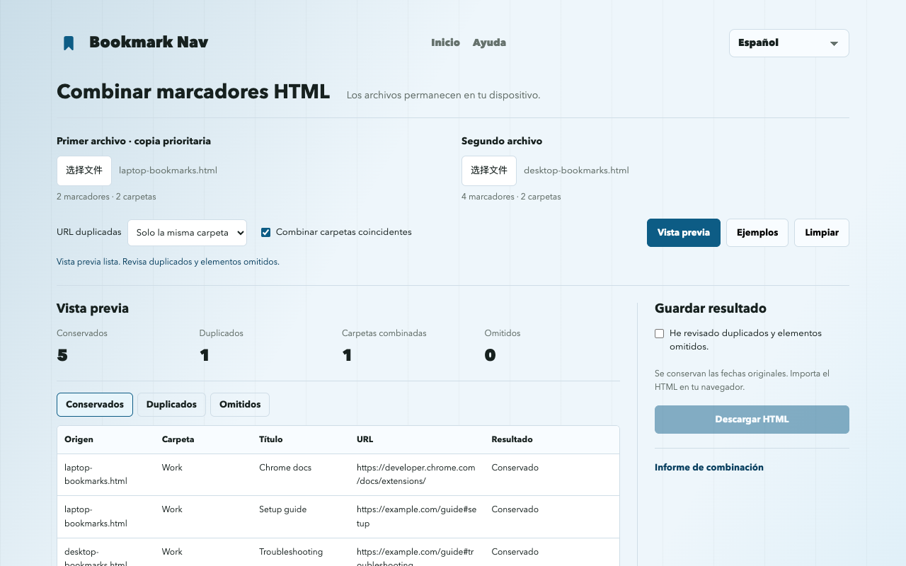

Cómo combinar marcadores de Chrome en HTML
Selecciona dos HTML exportados de Chrome, revisa duplicados, descarga el archivo combinado e impórtalo en Chrome. Combina archivos exportados, no cuentas ni sincronización del navegador.
Combinar archivos de marcadoresExportar, combinar e importar
- Abre chrome://bookmarks y exporta desde el menú del administrador. Guarda el HTML original como copia de seguridad y exporta también la segunda colección.
- Selecciona ambos archivos en la herramienta web. El primero tiene prioridad al eliminar un duplicado.
- Empieza eliminando duplicados solo en la misma carpeta. Revisa elementos conservados, eliminados y omitidos antes de cambiar las reglas.
- Confirma la vista previa y descarga el HTML. El sitio no modifica los marcadores del navegador.
- Importa el HTML desde el menú del administrador de Chrome. Prueba primero en un perfil vacío para no añadir copias a tu colección principal.
Un ejemplo reproducible de seis enlaces
Los ejemplos contienen seis enlaces. La vista previa predeterminada conserva cinco y elimina un duplicado de la misma carpeta. La misma URL en Learning y Work permanece en ambas; #setup y #troubleshooting siguen siendo distintas.

¿Qué se conserva y qué se omite?
El primer archivo tiene prioridad al eliminar un duplicado. Las URL se comparan exactamente; parámetros, #fragmentos, protocolo y www se mantienen distintos. Por defecto se conservan URL iguales en carpetas diferentes.
Solo se combinan carpetas con el mismo nombre y ruta superior. Sin combinación, cada origen recibe su carpeta; los nombres repetidos al mismo nivel llevan sufijos y se eliminan las marcas de barra.
La descarga incluye toda la jerarquía, URL compatibles, títulos y valores ADD_DATE / LAST_MODIFIED disponibles. No incluye iconos, descripciones, etiquetas ni datos de sincronización. Las URL ausentes o no compatibles, incluidas javascript: y data:, aparecen como omitidas. No se comprueba la disponibilidad de los enlaces.
Copias de seguridad y límites de importación
Conserva ambos archivos originales y haz una copia del navegador de destino. La importación añade marcadores; repetirla puede crear más copias. El HTML no reemplaza automáticamente tu colección.
HTML de marcadores Netscape en UTF-8. Por archivo: hasta 10 MiB, 25,000 marcadores/carpetas y 64 niveles, sin contar la lista exterior. JSON y plist no son compatibles.
El resultado puede superar los límites de entrada y no poder leerse de nuevo con esta herramienta. Las carpetas por origen añaden un nivel. Conserva los archivos originales.
Chrome omite carpetas vacías y restablece sus fechas. Conserva títulos, URL y fechas de creación de marcadores. Las marcas de barra pueden corresponder a la barra de marcadores del navegador.
Web frente a importación en la extensión
El sitio funciona sin extensión y solo descarga HTML. La adición directa, copia y deshacer verificado están preparados para la extensión 1.3.1; no asumas que ya están en la versión pública. Comprueba la versión instalada y el menú de importación. La adición directa crea una carpeta separada y usa fechas actuales, no las originales del HTML.
Obtener Bookmark NavPreguntas frecuentes
¿Se suben los archivos?
Los archivos se procesan en la memoria de esta pestaña, sin subidas ni análisis. Recargar o salir borra los archivos cargados. Las descargas permanecen en tu dispositivo.
¿Combina cuentas Chrome o bibliotecas sincronizadas?
No. Combina dos HTML exportados localmente. La sincronización sigue controlada por la configuración de Chrome.
¿Se conservan fechas y carpetas vacías?
Se conservan las fechas originales. Importa el HTML en tu navegador.
Chrome omite carpetas vacías y restablece sus fechas. Conserva títulos, URL y fechas de creación de marcadores. Las marcas de barra pueden corresponder a la barra de marcadores del navegador.